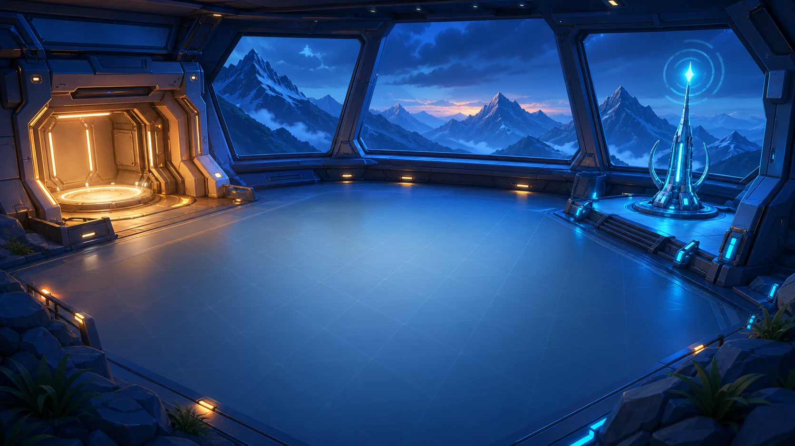

Level 3 von 4Warte auf deinen Code
PICO · Level 3 von 4
Zur Funkbase
Lade die Energiezelle im selben Programmlauf, plane anschließend deine Route zur Funkbase und sende dort das Rettungssignal.
- eigene Route
- Restenergie
- sende()
Live-Missionsansicht
Bereit für die FunkbaseEnergiepunkt → Funkbase

Aufzug
Funkbase (340, 15)
Energiezelle (−380, −90)
DROHNETRANSPONDERENERGIE––10 %
X −365Y 55
Pflicht zuerst real ladenZiel Funkbase (340, 15)Route frei wählbar
Missionsfeedback
Noch nicht ausgeführt
Lade die Energiezelle und erreiche anschließend mit eigener Route die Funkbase.
Rettungssignal
Code wird übernommenPython-Kontrollraum
Plane den Weg zur Funkbase
Nach dem Laden kannst du direkt oder über eigene Wegpunkte fliegen. Rufe sende() erst an der Funkbase auf.
Tippe auf einen Block oder fahre mit der Maus darüber. Die Infoblase zeigt jeweils nur einen möglichen Python-Schritt.
steuere über einen eigenen Wegpunktfahre_zu(0, -90)
steuere danach zur Funkbasefahre_zu(340, 15)
setze signal_erfolgreich auf drohne.sende()signal_erfolgreich = drohne.sende()
Der Zwischenpunkt ist nur ein Vorschlag. Geprüft werden echte Energie, Position und Signal.
Signalprotokoll
Die Funkbase wartet auf eine geladene Drohne.